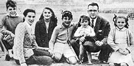
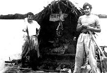

| |
EARLY LIFE Ernesto Guevara was born to Ernesto Guevara Lynch and Celia de la Serna y Llosa, on 14 June 1928, in Rosario, Argentina. Although the legal name on his birth certificate was "Ernesto Guevara", his name sometimes appears with "de la Serna" and/or "Lynch" accompanying it. He was the eldest of five children in an upper-class Argentine family of pre-independence immigrant Spanish (Basque, Cantabrian), and Irish ancestry.Two of Guevara's notable 18th century ancestors included Luis María Peralta, a prominent Spanish landowner in colonial California, and Patrick Lynch, who emigrated from Ireland to the Río de la Plata Governorate. Referring to Che's "restless" nature, his father declared "the first thing to note is that in my son's veins flowed the blood of the Irish rebels". Che Guevara was fond of Ireland, according to Irish actress Maureen O'Hara, "Che would talk about Ireland and all the guerilla warfare that had taken place there. He knew every battle in Ireland and all of its history" and told her that everything he knew about Ireland he learned on his grandmother's knee. Early on in life, Ernestito (as he was then called) developed an "affinity for the poor". Growing up in a family with leftist leanings, Guevara was introduced to a wide spectrum of political perspectives even as a boy.His father, a staunch supporter of Republicans from the Spanish Civil War, would host veterans from the conflict in the Guevara home. As a young man, he briefly contemplated a career selling insecticides, and set up a laboratory in his family's garage to experiment with effective mixtures of talc and gammaxene under the brand name Vendaval, but was forced to abandon his efforts after suffering a severe asthmatic reaction to the chemicals. Despite numerous bouts of acute asthma that were to affect him throughout his life, he excelled as an athlete, enjoying swimming, football, golf, and shooting, while also becoming an "untiring" cyclist. He was an avid rugby union player, and played at fly-half for Club Universitario de Buenos Aires.His rugby playing earned him the nickname "Fuser"—a contraction of El Furibundo (furious) and his mother's surname, de la Serna—for his aggressive style of play.
Motorcycle journeyMain article: The Motorcycle Diaries (book) black and white photograph of two men on a raft, fitted with a large hut. The far bank of the river is visible in the far distance In 1948, Guevara entered the University of Buenos Aires to study medicine. His "hunger to explore the world" led him to intersperse his collegiate pursuits with two long introspective journeys that fundamentally changed the way he viewed himself and the contemporary economic conditions in Latin America. The first expedition, in 1950, was a 4,500-kilometer (2,800 mi) solo trip through the rural provinces of northern Argentina on a bicycle on which he had installed a small engine. Guevara then spent six months working as a nurse at sea on Argentina's merchant marine freighters and oil tankers. His second expedition, in 1951, was a nine-month, 8,000-kilometer (5,000 mi) continental motorcycle trek through part of South America. For the latter, he took a year off from his studies to embark with his friend, Alberto Granado, with the final goal of spending a few weeks volunteering at the San Pablo leper colony in Peru, on the banks of the Amazon River. |